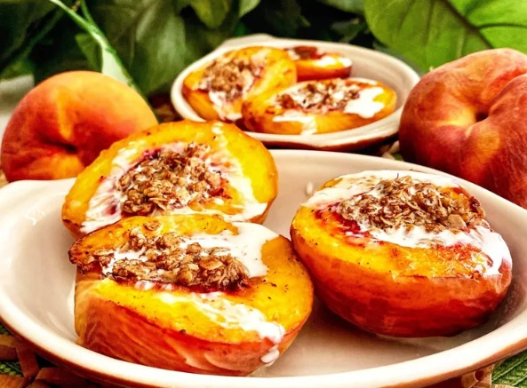

Air Fryer Grilled Peaches

Description
These grilled peaches are stuffed and made in the air fryer.
I like mine simple. I just pour cream over them.
But feel free to top them off with whipped cream or ice cream.
Ingredients
- ¼ cup quick-cooking oats
- 2 tablespoons melted butter
- 2 teaspoons brown sugar
- 1 teaspoon ground cinnamon
- 1 teaspoon vanilla extract
- 3 medium peaches, halved and pitted
Steps
- Preheat the air fryer to 350 degrees F (175 degrees C).
- Combine oats, butter, brown sugar, cinnamon, and vanilla in a small bowl. Set aside.
- Spoon out some of the flesh of the peaches. Place peaches skin side up into the air fryer basket. Air fry for 5 minutes.
Turn peaches over and spoon 1/2 tablespoon of the oat mixture into each cavity.
Air fry until oats are golden brown and crispy, 2 to 3 minutes more.